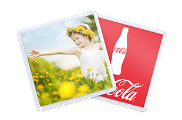
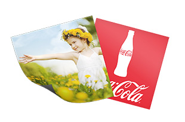
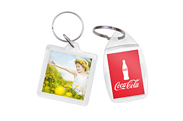

Продукция
Виды продукции и их описание

Акриловые магниты
Акриловый магнит – замечательный сувенир. Фотографии, помещенные в акриловые рамки, будут отличным подарком гостям на свадьбе. Магнитики можно легко крепить на холодильник, и они каждый день будут напоминать о радостных моментах Вашей жизни, не подвергаясь механическим повреждениям и выцветанию.

Виниловые магниты
Фото на магнитном виниле - прекрасный способ рассказать о производимых Вами товарах и услугах. Визитки и календарики, оформленные профессионалами, будут радовать глаз Вашего клиента с двери его холодильника и ежедневно напоминать о Вашем существовании.

Акриловые брелоки
Брелоки для ключей – Носите фотографии дорогих Вам людей, любимых вещей, памятных мест всегда с собой. Надежно защищенные прозрачным акрилом, они всегда будут с Вами. Акриловые брелоки – надежный способ всегда быть с клиентом.
О компании
Описание компании magnitik.by
Занимаясь непосредственно производством сувениров, мы обеспечиваем минимальную цену на свою продукцию. Производство находится непосредственно в Беларуси, что обеспечивает кратчайшие сроки изготовления. Вы всегда можете заказать магнитики на холодильник и акриловые брелоки с Вашими фотографиями в индивидуальном исполнении связавшись с нами по реквизитам, размещенными в разделе «контакты» на сайте magnitik.by. Подписывайтесь и следите за акциями и спец. предложениями в наших группах в социальных сетях.